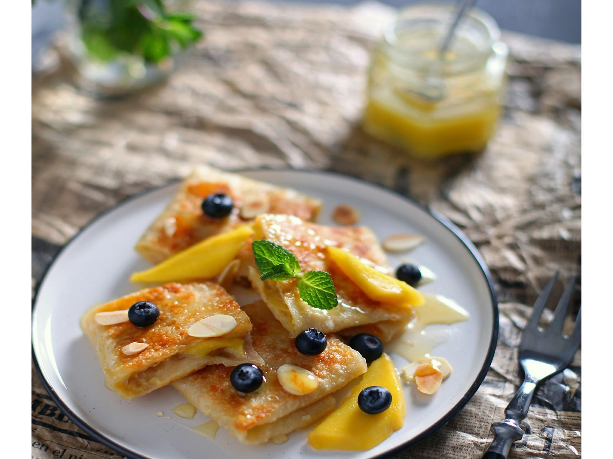

Блинчики с бананом – roti gluay – один из самых популярных видов тайского стритфуда. Европейцы называют их блинчиками, но по сути это хлеб, тончайшая лепешка с разнообразными начинками. Чаще всего это бананы с яйцом и с шоколадно-ореховой пастой, разные фрукты и ягоды. Готовые роти с бананом разрезают на небольшие кусочки и обильно поливают сгущенкой или шоколадным соусом.